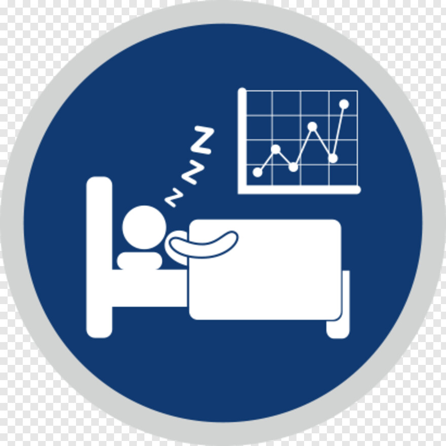
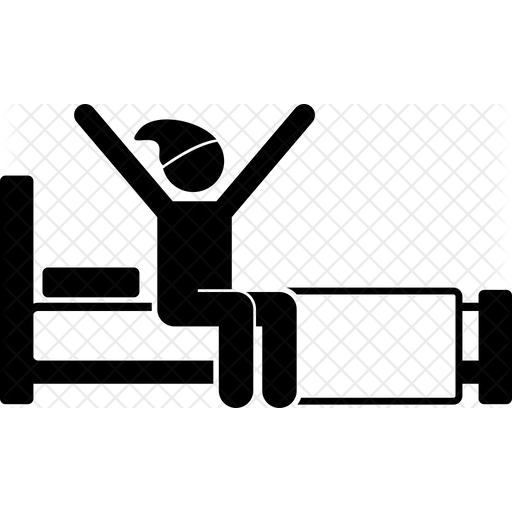

Sleep Parameters

Sleep Monitoring
Sleep monitoronig is useful for maintaing the correct Schedule in graphically and it easily understandle by the Users.it is most commomly done through measuring inactivity and movement to estimate sleep.

Sleep Time
The best time to go to sleep will vary from person to person.In general, you should aim to fall asleep a few hours after dark. going to sleep at the same time every day can help support a healthy sleep pattern

Wakeup Time
The best time to wakeup will vary from person to person.In general, you should aim to wake up with in the first hours of sunlight in the morning. going to wake up at the same time every day can help support a healthy sleep pattern